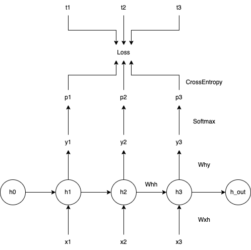
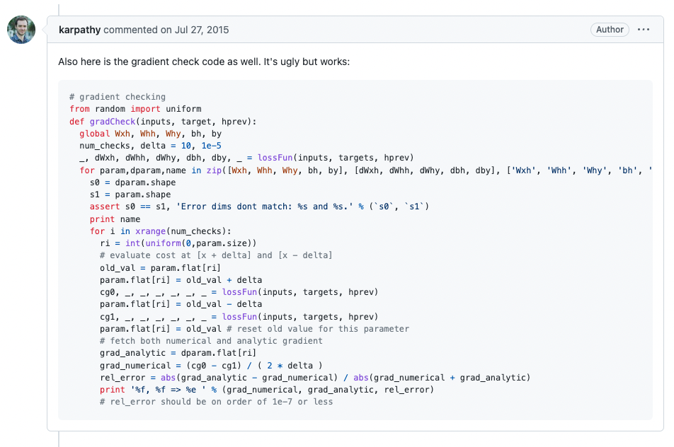
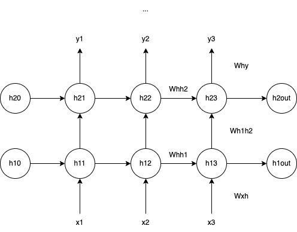
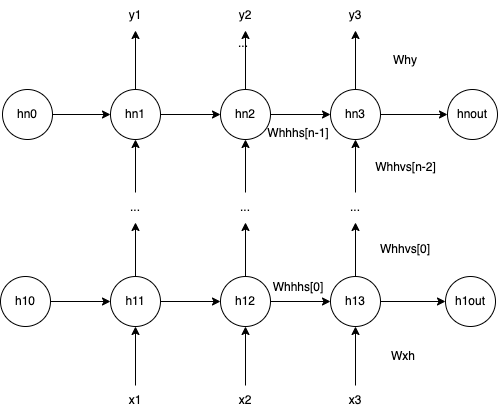

从头开始实现 RNN
What I cannot create, I do not understand. -- Richard Feynman
Andrej Karpathy 在 2015 年发表了题为 The Unreasonable Effectiveness of Recurrent Neural Networks 的博客，并配套开源了其中实验所用的 char-rnn 代码仓库，以及用 numpy 手写的 gist: min-char-rnn，阅读过后受益良多。于是最近花了一些时间做了下面这些事情：
-
逐行理解 min-char-rnn，即 vanilla RNN
-
实现 N 层 vanilla RNN
-
实现 LSTM (Long Short-Term Memory) RNN
-
探索 RNN 的可能性
- Paul Graham generator
- 三国演义
- 老友记
- Kubernetes 源码
- 超级丹的技战术
整个探索过程对我而言充满了趣味和挑战，并且在实践中令人激动地首次使用微积分的知识。尽管这只是深度学习的冰山一角，但足以让一名主营业务为服务端开发的软件工程师感到激动不已，于是便有了这篇博客，将这个过程记录下来。
在构思这篇博客前，我曾经想过写一个完整的、细致入微的、保姆式的从 0 - 1 实现 RNN 的教程。后来发现，在我自己阅读、理解和实现的过程中，至少投入数十个小时阅读大量资料，期间并没有发现任何一篇文章能做到这点，那么我又如何能期望写一篇博客做到这点？

那什么东西是值得分享的呢？我思考的结果是「学习路径」。在遇到理解障碍时，我尝试寻找并阅读了哪些资料，花费了多长时间，有什么心得体会，这些也许能够给到读者灵感。
⚠️ 本文假设读者有一定的深度学习理论基础和实践经验，同时阅读过上述的博客和脚本。但如果不介意可能出现的理解障碍，也欢迎继续阅读本文。
💡 一位热心网友就着 min-char-rnn 给出了一个带注释的版本，阅读后者的难度会更小一些
理解 min-char-rnn
min-char-rnn 实现的是单层的 vanilla RNN，其整体结构如下图所示：

前向传播
以下是源码中的前向传播部分：
for t in xrange(len(inputs)):
xs[t] = np.zeros((vocab_size,1)) # encode in 1-of-k representation
xs[t][inputs[t]] = 1
hs[t] = np.tanh(np.dot(Wxh, xs[t]) + np.dot(Whh, hs[t-1]) + bh) # hidden state
ys[t] = np.dot(Why, hs[t]) + by # unnormalized log probabilities for next chars
ps[t] = np.exp(ys[t]) / np.sum(np.exp(ys[t])) # probabilities for next chars
loss += -np.log(ps[t][targets[t],0]) # softmax (cross-entropy loss)
通常比较精巧的地方就是令人费解的地方，这里比较精巧的自然是 CrossEntropy 的计算：
loss += -np.log(ps[t][targets[t],0])
CrossEntropy 计算的是两个概率分布的差异程度，差异越大，熵值越大。这里的两个概率分布分别是「RNN 预测的下一个字符的概率分布」和「实际下一个字符的概率分布」，在监督学习过程中，后者是一件已经确定的事情，所以它的概率分布是 [0, 0, ..., 1, 0, 0]，即除一个确定字符的出现概率为 1 外，剩余字符的出现概率皆为 0。于是最终对损失函数产生贡献的只有某一个字符出现的概率，即这里的 ps[t][targets[t], 0]。
反向传播
以下是源码中的反向传播部分：
for t in reversed(xrange(len(inputs))):
dy = np.copy(ps[t])
dy[targets[t]] -= 1 # backprop into y. see http://cs231n.github.io/neural-networks-case-study/#grad if confused here
dWhy += np.dot(dy, hs[t].T)
dby += dy
dh = np.dot(Why.T, dy) + dhnext # backprop into h
dhraw = (1 - hs[t] * hs[t]) * dh # backprop through tanh nonlinearity
dbh += dhraw
dWxh += np.dot(dhraw, xs[t].T)
dWhh += np.dot(dhraw, hs[t-1].T)
dhnext = np.dot(Whh.T, dhraw)
如果你像我一样只对数学分析中最基本的「单变量求导」还留存有一定的记忆，那看这段代码会有种「表面上好像能看懂，仔细思考又觉得哪里对不上」的感觉。具体地说，我们很容易看出来这些代码是在将损失函数的变化按相反的方向一步一步地倒推回去，再加上脑海中尚存的单变量「链式求导」规则，似乎一切顺理成章。但「细思极恐」，这里面有标量、有向量，还有矩阵，什么是「标量对向量求导」？什么是「标量对矩阵求导」？什么是「向量对向量求导」？什么是「矩阵对向量求导」？什么是「矩阵对矩阵求导」？我们学过「向量求导」或者「矩阵求导」吗？
为了消解脑海中尚不清晰的地方，我通过搜索引擎，以类似「matrix calculus for engineer」的关键词，找到了一篇长文：The Matrix Calculus You Need For Deep Learning，它正好是为像我这样只记得「单变量求导」的人量身定做的资料。于是我集中精力花了 3-4 个小时把全文通读，随后在笔记本上将代码中的几个标量 (损失函数)、向量、矩阵间的求导都推了一遍，终于云开雾散，事实证明这样的付出十分值得。
Andrej 在反向传播 Softmax + CrossEntropy 时写了个备注：
backprop into y. see http://cs231n.github.io/neural-networks-case-study/#grad if confused here
令人沮丧的是，当你仔细阅读这部分内容，会发现这样一句话：
It’s a fun exercise to the reader to use the chain rule to derive the gradient, but it turns out to be extremely simple and interpretible in the end, after a lot of things cancel out...
真正看懂它，是我在阅读完上面那篇关于 Matrix Calculus 的扫盲文章，紧接着继续阅读这篇博客 The Softmax function and its derivative 之后。最终的答案很具有美感，但推导的过程很需要耐心。
值得一提的是，这里在训练的时候还使用了「teacher forcing」的技巧：
dy = np.copy(ps[t])
dy[targets[t]] -= 1
即不管 RNN 在每次 unroll 都使用标准答案，而不是自身学到的结果 np.argmax(ps[t])。在其它教程中，我也看到过人们会给「teacher forcing」施加一个概率，就像 dropout_p，因为在推理过程中不会有任何字符的参考结果。据说通过降低这个概率可以一定程度上避免「学生在实际解题时过分依赖老师」。
Gradient check
在 min-char-rnn 脚本下的第一个评论，就是 Andrej 自己的：

刚看到这段代码，我完全不知道 gradient check 是在做什么，自然也无法理解这段代码的含义。不过在搜索引擎的帮助下，我还是找到了斯坦福大学开放的教程 Unsupervised Feature Learning and Deep Learning，其中一节正是介绍 Debugging: Gradient Checking。所谓 gradient check(ing) 其实就是对比「通过反向传播计算出来的梯度」与「利用导数定义近似计算得到的梯度」，来判断自己的反向传播阶段代码是否写对了，是工程师构建神经网络时常用的一种简单有效的 debug 方法。由于每次训练都可能非常耗时，而且一些问题即便存在，表面上也可能看着一切正常。在构建完神经网络后，开始训练之前，执行 gradient check(ing) 很有必要。
在实现 2 层、 n 层 RNN 的过程中，我就利用 gradient check(ing) 成功发现了代码中的若干逻辑问题。这些问题不会导致程序崩溃，通过传统的「眼神调试」、「print 调试」、「单点调试」都极难发现。
N 层 vanilla RNN
在阅读 min-char-rnn 时，我在心里就萌生了一个想法：能否依葫芦画瓢直接用 numpy 实现一个 N 层 vanilla RNN？但步子太大容易扯着蛋，先挑战一个 2 层的 vanilla RNN：

在结构上，2 层的 vanilla RNN 多了一个 hidden layer，第二层 (h2) 的输入就是第一层 (h1) 的输出，主要区别在于两层的输入维度不同，因为这点不同，在代码中需要分开实现它们的传播逻辑。我的实现可以在这里找到，代码中的变量命名与图中的标识保持一致。实现基本逻辑大约花费了半个小时时间，但由于对 numpy 的不熟悉以及一些矩阵的名字和结构相近导致的 typo，一开始并不是 bug-free。还好在阅读 min-char-rnn 的时候没有偷懒忽略 gradient check(ing)，多亏它告诉我实现有误，避免训练出人工智障。
有了上面的基础，从 2 层到 N 层的过程就比较胸有成竹。N 层 的 vanilla RNN 结构如下图所示：

结构上，第二层 (h2) 到第 N 层 (hn) 的传播逻辑一样，因此可以通过一个循环来实现。有了前面的经验，这次很快就通过了 gradient check(ing)，我的实现可以在这里找到，代码中的变量命名与图中的标识保持一致。
LSTM
从 vanilla RNN 到 LSTM 的过程比想象中更艰难。经过简单的关键词检索，不难发现 nicodjimenez/lstm 项目，简单扫一眼它的 README：
A basic lstm network can be written from scratch in a few hundred lines of python, yet most of us have a hard time figuring out how lstm's actually work. The original Neural Computation paper is too technical for non experts. Most blogs online on the topic seem to be written by people who have never implemented lstm's for people who will not implement them either. Other blogs are written by experts ...
基本可以断定这正是我所需。在这个项目中，作者提到一篇综述论文：A Critical Review of Recurrent Neural Networks for Sequence Learning，称赞这篇文章的同时也提到自己的实现使用了文章中的数学符号。都已经看了一篇 matrix calculus，再看一篇综述文章那又如何？于是又是三四个小时过去了...
读毕，我最大的感受是：比「直接学习它的结构，然后实现它」更重要的是理解它的提出是为了解决什么问题。如果时间不够，也可以阅读这篇博客 Understanding LSTM Networks。
💡在学习的过程中，尝试自己用笔和纸画一些 LSTM 的结构有助于对网络结构整体的理解
有了上面的储备，接下来就回到 nicodjimenez/lstm，把脚本看懂即可。事后分析，从测试用例出发有助于更快地理解代码结构。作者自己写了一篇博客 Simple LSTM (发表时间早于 Andrej 的博客) 介绍代码中的反向传播部分，但只要彻底理解了 vanilla RNN 的反向传播原理，这里的推导在难度上并没有本质的提升，只是传播的流向比后者复杂一些。
在花费将近一个小时后，依葫芦画瓢，我写出了 min-char-rnn 的 lstm 版本。同样地，利用 gradient check(ing) 确保反向传播部分的逻辑实现正确。
探索 RNN 的可能性
实现完玩具版 RNN，理解已经足够到位，可以开始做一些有意思的事情了。本文开篇提到过，Andrej 开放了他做实验所使用的 char-rnn 代码仓库，提供了 RNN、LSTM 和 GRU (另一种 RNN) 的实现以及一整套训练、推理的流程。在项目 README.md 中，Andrej 又推荐了来自 Justin Johnson 优化性能后的版本：torch-rnn，后者甚至提供了容器化支持。在花费了若干小时 (尴尬的是，大部分时间花在了等待 docker pull 上) 搭建好 GPU 环境后，终于可以开始正式探索。
💡如果你手边有 GPU，搭建环境时可能还需要这些资料：
最后用 nvidia-docker 启动时可以把 torch-rnn 项目的本地路径用 Docker 的 volume 参数与容器内部的
~/torch-rnn路径建立双向绑定，这样就可以在容器里自由地训练模型。
Paul Graham generator
先复现一下 Andrej 博客中的第一个实验，将 Paul Graham 的 essays 抓取到本地 (我的脚本)，然后将其合并成一个文本文件，送入模型。实验参数与 Andrej 的保持一致，训练 50 个 epochs，下面是用模型采样出的段落示例：
So there even a list of few things you're supposed to concipe of
different startups—you need to convince customers that new gets
painting is one of them at startups without taking that. They're a
rare concopporation, that's within college. To a real way to addict
you, but what you're expected.
If you're capped in several programmers, what proves them-defend
what you're working about. But you don't notice based on your generation:
since he doesn't realize it: all much shouldn't be just that that,
that is short of this actual audience. Open study new people
they have shifting up a city. [ 7 ] This surprises still say here told
it's a platazine. There seem to degree why formidable things we tend to
volunteregal startups elity is in Grisk Fortle. Sometomes The
other generations were proportionate at real implications to cogain.
If there are working off you're working on simply to like that sharp
it horter than you. How so hote-wealth to treates back of friends
they to be doing. Most nived in a number is to concied our fioks companies.
中间的这句话让我很是喜欢：
To a real way to addict you, but what you're expected.
可以翻译成「让你上瘾，甚至用你期望的方式」吗？
三国演义
罗贯中的版权现在已经不受法律保护，于是我轻而易举地在百度搜到了三国演义的全文 txt。让我们一起看看 RNN 的文言文作品：
太史云长闻之，即遣人马往全徐聚及关缚。斗时一将军马，欲取平郡；
操轻勒弃衣弓甲，来夜身中。原马玄德回寨新中，勒法东飞未还，因虽带明一林而到。
韦众将令军接后，折声桥剑于穿着。备入城十里，赵云拍马皆进，被给来迎之，
布会绳帐落下命，引一马军无弩而走。百凉五路，杀之处，走由精营马也。
次日，如柴把拥山白下阵。待我三月，手力顺从，直至白配。两十白得小枪粮住乱，
砍拜军士相招烈，兴阵后料，高边卧打宝后一齐出，右图山草，山行至溪。
又所通人打身平阵，兼见剿伙。马超在前扎下兵，一面有军卧洛百人，只被白首视之。
操为归锋，丕败宣桥进走曰：“宋大浩于来水，未如能敢施；无歹染之兵，
彼得生动谗以理辞己下大机也！”表云：“不可此常之，今与何意！”
随从吕旷令西凉姜布有荆州，箭政跪身，军马挺南。曹操大不告离，何守而降。先主非士，又命关看。
甫犹报关曹军师武俱山锋，休见玄德。坚功意久，立了刘备，嘉乃置臣谋长耳。
荀瑁曰：““吴悌实雄违，休得逆我，难来用将。昨恐萧通为运。吾不以向计也，各有不可，名之。”
瑜惊曰：“孤奉某驱反星不和！”丕大惊，乃下一面中调赖居，哨待曹公老父，乃诸县呈“
热荒子因外谭自，引军人骑法。国秋引兵至涪坏寨，叫肃又退，威不想送芝如决，
可使将过了玄德。军士义车绑交郡看。当日山戈从石汉中去了，言玄德已得家草，
孙瓒便孙乾守而征。忽然一帜四山诸万将倾否：“两谋人皆裨宝饿河，四海有过所力；
左看在金中，掣徐州皆上破营。祖首朝廷不受；势四股盟，并设猖峡：
却说植驱来，饱接也见，道感温校。只闻吾激透言城不然。
且军马报徐州渡寨，再收将催投“将分布、乔掌、韩仲。各、张仪刀手于军马。
少败进，操问庞德曰：“汝平有真妙矣！”阿视之，拜便商议。瓒部商情：左右看鲁为太，
计偿衡挟，提乏畏中。表料第氏受之情，未胜者报孔明，用然天下。
孔明无在车仗至条厅亡，隐教转到周上。后人有诗赞一徒方诺，毗进入府基。
先说孔明曰：“杀帝刘业，与卿六锋也！”孔明曰：“汝来说丞相夫战，亦何鼓降？”二人便同先阵器。
你是否也像我一样认认真真地读了一遍？虽然不知道它在写什么，但 RNN 对文言文的掌握我还是自愧不如。
老友记
一位网友在 Github 上维护了老友记全 10 季的剧本：fangj/friends，他应该不会想到有一天这个仓库会变成 AI 的「饲料」？写了一个脚本简单将 html 处理成了普通文本 (去掉标签，unescape 一些特殊字符)，送进模型训练。下面是得到的剧本节选：
[Scene: Chandler and Joey's, Phoebe is answering from some gateen, the same assarent duck is
smile.]
Ross: Seriously, I can’t…I play larny?
All: Oh, guys. This, this is where it’s such some Agenton on the missay I could take
the bean in your side to me.
Phoebe: What? What do you think he’s gonna see you?
Rachel: Really?! The only bay idea, but that’s okay! You gotta get rome,
tell me!
Rachel: Wow! What are you laughing after anything women?
Ross: Monnica told me about! This is beautiful that turts familiar. So I get a
button, fine. What are you doing?
Ross: Da me. (Pretends in door) I decided to cold use that.
Rachel: Whoa, whoa whoa, day! What a duving dollars!!!!
可以看出，RNN 掌握了剧本的结构：场景、人物、对话、动作。虽然对话看起来有些空洞，但令人惊讶的是它学会了 Rachel 的语气：
Rachel: Whoa, whoa whoa, day! What a duving dollars!!!!
从「 a 和 dollars 同时出现」可以了解到它的语法还未学到位，不过写成这样还不值得我们鼓励一下？
Kubernetes
Codepilot 和 AlphaCode 已经向工程师们证明了 AI 写代码的能力，我也想看看 3 层 LSTM 能做到什么样的程度。于是我 clone 了 Kubernetes 仓库，将所有 Golang 源码聚合 (cat) 成一个文本 (你猜猜 Kubernetes 的 codebase 所占的空间有多大？评论区告诉你)，送进 torch-rnn，训练两个小时，采样出了下面这段代码：
// Reporter kubeconfig bootstrap implementation back of ne non-best or proto
// callered present to a new iterator that are build to
// seriily region.
type Instances struct {
Interface framework.ClientVolumeInterface
wait MustInfoDefaultCreatePrivilegedValue
HostDNS interface{}
// Needed inshelt is data from bucket for checks, if the double with
// this address group and needs used to less 4anology and https://github.com/policy/existing-storage/using/recevable-src image/shtge efility and intendaroping
// store
decisionKey *string
// Prefer operations that successfully at I registry. See methods
// instance (documentations) the console set4 are used.
Codes bool
}
// NewPathParameter address taints of Server automatically.
func (pl *NormalGanglIngress) GetAll(data interface{}, contains *stderr.IsState) (bool, error) {
key := &zs.FreeCheck{}
_, err := d.info.CommandStatus(ctx)
if err != nil {
return err
}
error := field.ErrorTypes()
return withRegisterBackoff(indexing)
}
// JSONNM currently directory was returned in it deleting the recorder and certificates.
type Attacher struct {
obj uint32
cidr []*Decls.ParseMessage
sgip io.SharedInformer
Snapshot *Token
}
func (s *symconfig) DescribeRestore(ctx context.Context, m file.Info) (bool, error) {
return nil
}
从最后一个函数 DescribeRestore 可以看到，我们的模型还没发现返回参数的数量需要与函数定义保持一致。但至少这些代码被 Golang 的语法高亮插件认可了！甚至它还学会了写注释。同样有意思的是，我在平时工作中写代码时，常常需要依赖 gofmt 或 goimports 这样的工具自动格式化代码，比如：
type Attacher struct {
obj uint32
cidr []*Decls.ParseMessage
sgip io.SharedInformer
Snapshot *Token
}
经过格式化后，会变成：
type Attacher struct {
obj uint32
cidr []*Decls.ParseMessage
sgip io.SharedInformer
Snapshot *Token
}
从上面的代码来看，我们的 RNN 似乎也需要这样的工具。
超级丹的技战术
这是一个我尚未有精力去完成的实验，因为它的前期数据处理工作量太大，在这里我仅介绍一下想法：
喜欢看/打羽毛球的朋友都知道，球员在场上步伐 (并步、跑步、交叉步等)、击球方式 (高、吊、杀、搓、放等)、球的落点 (前、中、后、左、中、右 9 个点) 的一系列选择，构成球员的技战术打法。这些选择来自于球员对场上局势的判断 (之前的来回、对方球员的选择以及双方的身心状态)。
如果我们能将这些信息编码成离散的状态，就能将羽毛球比赛抽象成时序数据。要学就要从最好的学，所以我的想法是：获取林丹巅峰时期的所有比赛视频，记录下他和所有对手在每个回合做出的球路选择，然后送进 RNN。是不是有助于新的运动员快速掌握「超级丹」的球路？希望我有一天能有闲暇时间来完成这项工作。如果看到这篇博客的你是国家羽毛球训练中心的工作人员，欢迎联系我， just kidding : )。
参考资料
- The Unreasonable Effectiveness of Recurrent Neural Networks
- Github: karpathy, char-rnn, min-char-rnn
- The Matrix Calculus You Need For Deep Learning
- The Softmax function and its derivative
- UFLDL Tutorial, Debugging: Gradient Checking
- Neural Networks and Deep Learning
- eliben/deep-learning-samples/min-char-rnn
- nicodjimenez/lstm
- Understanding LSTM Networks
- ZhengHe-MD/replay-nn-tutorials/min-char-rnn